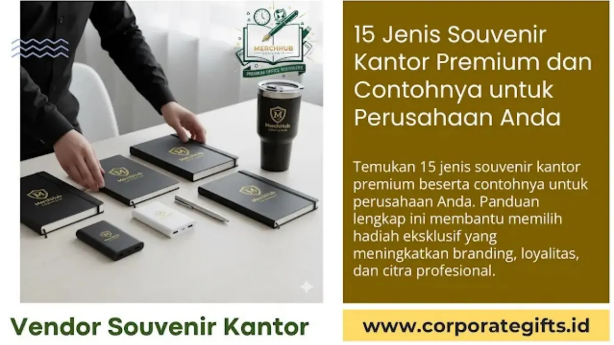

Corporate Gifts ID - Souvenir kantor premium adalah instrumen hadiah korporat berkualitas tinggi—seperti pulpen logam grafir laser, agenda kulit custom deboss, tumbler stainless steel SUS 304, hingga paket gift set VIP eksklusif—yang dipilih perusahaan untuk memperkuat reputasi brand, mempererat relasi kemitraan bisnis, dan menjadi media promosi jangka panjang. Artikel ini menyajikan kurasi 15 jenis souvenir kantor premium paling populer beserta contoh spesifikasi, keunggulan branding, dan panduan praktis memilihnya sesuai profil audiens perusahaan Anda.
Poin Kunci Keunggulan Souvenir Kantor Premium:
- Penguatan Brand Equity & Prestise: Membangun citra korporat yang bonafide, profesional, dan berkelas di hadapan klien eksekutif maupun mitra strategis.
- Retensi Kemitraan Jangka Panjang: Hadiah yang fungsional dan bermutu tinggi digunakan setiap hari, menghasilkan brand recall positif secara berkelanjutan.
- Diferensiasi Kompetitif: Tampil menonjol di antara kompetitor industri dengan sentuhan packaging hardbox eksklusif dan kustomisasi logo presisi tinggi.
- Fleksibilitas Anggaran & Skala Bisnis: Tersedia opsi produk bernilai tinggi untuk segmentasi klien VIP hingga paket fungsional untuk apresiasi karyawan.
Kenapa Souvenir Kantor Premium Penting untuk Perusahaan?
Di era persaingan bisnis yang dinamis, souvenir kantor bukan lagi sekadar cinderamata pelengkap atau formalitas seremonial. Memberikan produk berkualitas mencerminkan bagaimana perusahaan Anda memperlakukan mitra kerja dan menghargai standar mutu.
- Meningkatkan Loyalitas Klien: Hadiah yang dipikirkan dengan matang menunjukkan apresiasi tulus, memicu hubungan emosional yang solid di luar sekadar transaksi faktur.
- Membangun Citra Positif Perusahaan: Karyawan dan stakeholder yang menerima merchandise berkelas merasa bangga menjadi bagian dari organisasi tersebut.
- Media Promosi Jangka Panjang yang Efektif: Barang premium memiliki masa pakai bertahun-tahun, memberikan eksposur merek tanpa biaya iklan berulang.
15 Jenis Souvenir Kantor Premium Paling Populer
Berikut kurasi 15 ide souvenir kantor premium yang dapat disesuaikan dengan kebutuhan branding perusahaan Anda:
1. Pulpen Logam Eksklusif (Rollerball & Ballpoint)
Souvenir klasik yang tak pernah lekang oleh waktu. Dibuat dari material kuningan atau aluminium solid dengan sentuhan grafir laser logo yang detail. Sangat ideal untuk momen penandatanganan kerja sama (MoU) atau hadiah apresiasi jajaran manajerial.
2. Agenda Kulit Custom (PU Leather Deboss)
Buku catatan dengan sampul kulit sintetis premium bertekstur lembut, dilengkapi slot kartu nama dan pengikat elastis atau magnet. Kustomisasi logo menggunakan teknik blind deboss menghasilkan kesan minimalis nan mewah.
3. Tumbler Stainless Steel Berkualitas Tinggi (SUS 304)
Tumbler vacuum flask tahan suhu panas dan dingin hingga 12 jam. Menggunakan material food grade aman, menjadikannya pilihan hadiah fungsional yang mendukung gaya hidup sehat dan ramah lingkungan di kantor.
4. Power Bank Premium Fast Charging (PD 20W)
Perangkat esensial penunjang mobilitas profesional masa kini. Pilih kapasitas 10.000 mAh bersertifikasi keselamatan resmi dengan bodi metal atau tekstur kulit ber-print logo UV.
5. Wireless Charger & Desktop Charging Dock
Gadget modern bertenaga 15W fast charge yang mempercantik tata ruang meja kerja sekaligus memberikan kemudahan pengisian daya perangkat smartphone secara nirkabel.

Kombinasi paket gift set hardbox magnetik memberikan pengalaman unboxing istimewa bagi penerima hadiah.
6. Paket Gift Set Box Eksklusif
Perpaduan serasi 2 hingga 4 item esensial—seperti pulpen metal, tumbler grafir, dan notebook kulit—yang dikemas dalam kotak hardbox berbusa beludru presisi. Sangat direkomendasikan untuk cinderamata VIP dan pimpinan instansi.
7. Desk Organizer Elegan (Kayu & Kulit)
Wadah multifungsi penyimpan alat tulis, kartu nama, dan penyangga smartphone yang menjaga kerapian meja kerja para pengambil keputusan.
8. Speaker Bluetooth Mini Premium
Speaker nirkabel portabel dengan bodi aluminium anodized yang menghasilkan audio jernih, cocok untuk menemani sesi kerja maupun panggilan konferensi santai.
9. Jam Meja Mewah Multifungsi
Menampilkan jam digital LED, kalender, dan pengukur suhu ruangan berbalut material kayu atau metal elegan, memberikan sentuhan dekoratif profesional di ruang kerja.
10. Kopi Artisan & Cokelat Single-Origin dalam Kemasan Khusus
Produk kuliner gourmet Nusantara berlabel korporat yang memberikan kehangatan emosional dan pengalaman sensorik berkesan saat momen perayaan hari besar atau apresiasi relasi.
11. Aromatherapy Diffuser & Essential Oil Set
Pilihan cenderamata wellness yang membantu meredakan stres kerja, menciptakan atmosfer ruangan kantor yang segar, rileks, dan mendukung fokus kerja.
12. Tote Bag & Tas Laptop Kulit Elegan
Bukan tas promosi tipis biasa, melainkan tas jinjing atau pelindung laptop bermaterial kanvas tebal dilapisi kulit sintetis bermutu tinggi dengan jahitan presisi.
13. Pen Holder & Name Plate Meja Custom
Plakat nama meja berbahan kombinasi kayu mahoni dan akrilik bening etsa kuningan, mempertegas identitas posisi profesional penerima di kantornya.
14. USB Drive Premium Metal / Kayu dalam Packaging Eksklusif
Flashdisk chip original berkapasitas besar dengan bodi putar logam atau kayu bambu, dikemas rapi dalam tin box atau wooden case berlogo resmi.
15. Souvenir Ramah Lingkungan Kelas Premium (Eco-Executive)
Botol minum kaca borosilikat dengan sarung bambu alami, set cutlery stainless steel anti-karat, atau agenda berbahan kertas daur ulang bersertifikat FSC.
Tips Memilih Jenis Souvenir Kantor Premium yang Tepat
Agar pengadaan souvenir kantor memberikan dampak optimal terhadap citra perusahaan, terapkan panduan berikut:
- Kenali Karakter & Tingkatan Penerima: Sesuaikan pilihan barang dengan level jabatan penerima, mulai dari staf umum, manajer, hingga jajaran direksi eksekutif.
- Prioritaskan Utilitas Tinggi: Pilih barang yang benar-benar mempermudah aktivitas harian penerima di meja kerja agar brand Anda selalu terlihat.
- Perhatikan Detail Kustomisasi Logo: Pastikan logo perusahaan diaplikasikan dengan teknik elegan seperti grafir laser atau deboss yang rapi tanpa terkesan mencolok seperti papan iklan.
- Pilih Kemasan Hardbox Berkualitas: Presentasi kemasan kotak eksklusif berkain satin atau busa cetak menambah 50% nilai persepsi kemewahan hadiah.
- Bekerja Sama dengan Vendor Berpengalaman: Pastikan vendor memiliki rekam jejak teruji, kontrol kualitas ketat, dan transparansi timeline produksi.
Tabel Rekomendasi 15 Souvenir Kantor Berdasarkan Kategori
Berikut klasifikasi 15 jenis souvenir kantor premium beserta perkiraan peruntukan dan karakteristik utamanya:
| Kategori Souvenir | Contoh Item Produk | Material Utama | Teknik Branding Terbaik | Rekomendasi Penerima |
|---|---|---|---|---|
| Alat Tulis & Organizer | Pulpen Metal, Agenda Kulit, Desk Organizer, Pen Holder | Logam Kuningan, Kulit PU, Kayu Mahoni | Laser Engraving, Deboss | Manajer, Klien Korporat, Notaris |
| Drinkware & Lifestyle | Tumbler Vacuum SUS 304, Eco Glass Bottle, Cutlery Set | Stainless 304 Food Grade, Kaca Borosilikat | Laser Grafir 360, Print UV | Karyawan, Peserta Event, Eksekutif |
| Gadget & Aksesoris Teknologi | Powerbank Fast Charge, Wireless Charger, Mini Speaker, USB Metal | Aluminium Anodized, ABS Tahan Api | Laser Engraving, UV Flatbed Print | Mitra Bisnis IT, Profesional Muda, VIP |
| Gift Set & Wellness | Executive Gift Box, Diffuser Aromaterapi, Kopi Gourmet | Hardbox Magnetik, Biji Kopi Specialty, Minyak Alami | Hot Stamping Foil, Custom Sleeve Print | Direksi, Tamu Kehormatan, Klien VIP |
Siap mewujudkan souvenir kantor premium yang memukau bagi mitra dan karyawan Anda? Jelajahi aneka koleksi terbaru di Katalog Resmi CorporateGifts.ID atau mintalah penawaran harga dan konsultasi desain langsung melalui formulir Permintaan Penawaran (RFQ).